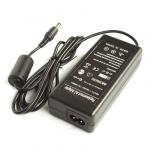
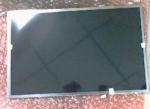

РЕЗЕРВНИ ЧАСТИ
Фирма ТОРИН КОМПЮТЪРС предлага голямо разнообразие от резервни компоненти за лаптопи - захранващи адаптори, LCD матрици, хард дискове, памети, оптични устройства и много други . Някои от тези части са морално остарели и можем да ви ги предложим само като употребявани. Други са много динамични от една страна, а от друга също можем отново да ви ги предложим както като нови така и като употребявани . Това е причината да не бъдат изброени тук. Ако имате нужда от някой специфичен компонент не се колебайте да ни се обадите или да ни пишете. Бъдете сигурни, че ще ви отговорим на първия работен ден.
Ето новите компоненти, които най-често се подменят:

НОВИ ЗАХРАНВАЩИ АДАПТОРИ:
Power Adapter 19V / 90W 5.5 x 2.5mm Jack за FSC, Toshiba, HP, Acer, MSI, GateWay, LG, Mitac, NEC и др.
Power Adapter 19V / 90W 5.5x 1.75mm Jack for Acer
Power Adapter 15V / 90W 5.5 x 3mm Jack for Toshiba
Power Adapter 19V / 65W 7.4 x 5.0mm Jack for HP / 3 pins
Power Adapter 19V / 150W 5.5 x 2.5mm Jack за FSC, Toshiba, HP, Acer, MSI, GateWay, LG, Mitac, NEC и др.
Power adapter 19V / 90W, 3 pins, for Lenovo/IBM
Power adapter 19V / 90W, 3 pins, for Dell Notebooks
Power adapter 19V / 90W, 3 pins, for SONY Notebooks
Power Adapter 12V / 60W 5.5 x 2.5mm Jack for LCD MONITOR
ВАЖНО: Захранващите адаптори не са универсални и жакът им е само с указаните размери кабели.

НОВИ LCD матрици:
8.9" LCD Wide Glossy, 1024x600, Glossy
10" LCD LED Wide, 1024x600, Glossy
10.1" LCD Wide Glossy, 1024x600, LG-Philips
12.1" LCD Wide Glossy, 1280x800, LG-Philips
13.3" LCD Wide Glossy, 1280x800, LG-Philips
14" LCD LED, Glossy, 1366x768, HD Ready
14.1" Wide LCD Glossy, 1280x800, LG-Philips
15.4" Wide LCD , Glossy, 1280x800,LG-Philips
15" LCD Normal, Glossy,1024x768,LG-Philips
15.6" LCD LED, Glossy, 1366x768, HD Ready
15.6" LCD TFT, Glossy, 1366x768, HD Ready
16" LCD Wide, Glossy, 1366x768, HD Ready
16" LED LCD, Glossy, 1366x768, HD Ready
17" LCD Wide, Glossy, 1440x900, LG-Philips
17.3" LCD LED, Glossy, 1600x900, Samsung
ВАЖНО: Размерът на матрицата не е достатъчен да се каже дали може да се монтира във вашия лаптоп. Диагностиката, каква матрица е подходяща за вашия лаптоп, е безплатна. Фирма ТОРИН КОМПЮТЪРС доставя по заявка LCD матрици за всички марки лаптопи.